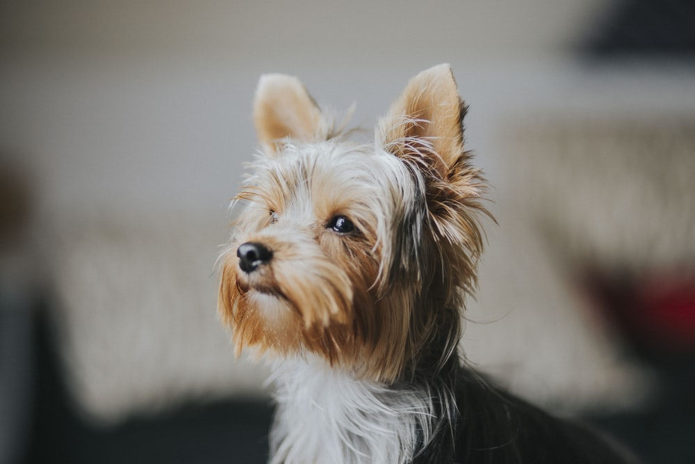
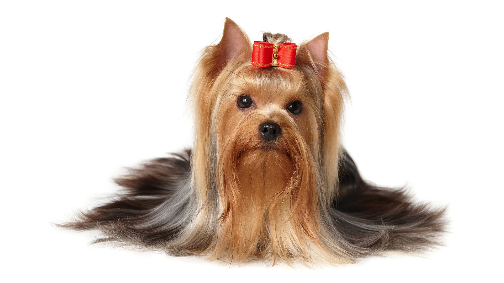
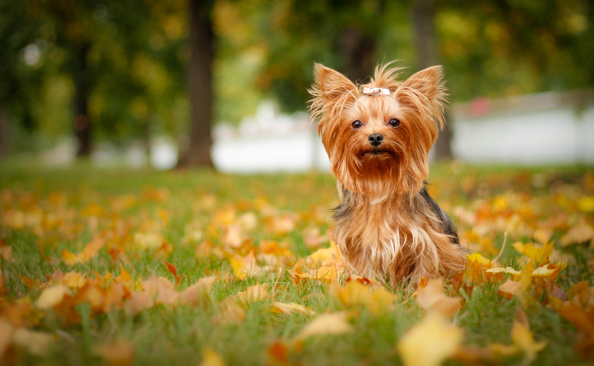

Yorkshire Terrier

origin
United Kingdom
size
Smallest
color
Others
type
Purebred
breed group
Companion (UKC), Toy (AKC:1885)
character
Fluffy
temperament
Alert
Courageous
Courageous
height
24-28 inches (61–71 cm)
weight
85-110 pounds (38–50 kg)
geography
Europe
overview
The Yorkshire Terrier’s appearance is that of a well-balanced, long coated, small (Toy-type) terrier, readily identified by its steel blue and tan, straight-flowing coat. The hair is parted on the muzzle and from the base of the skull to the end of the tail. The body is square and evenly proportioned. The dog’s high head carriage and confident manner gives the appearance of vigor and self-importance.
history
The Yorkie was created by working men of north England, who developed the breed for catching the terrible rats and mice that infested clothing mills and mine shafts. These hunting dogs could penetrate into badger and fox burrows. The breed is not very old, but its origins are not entirely certain.
However, it seems likely that Scotsmen seeking work in the woolen mills of Yorkshire brought with them various types of terrier, including the Skye Terrier, Dandie Dinmont, Manchester Terrier, Maltese and the now-extinct Clydesdale (Paisley Terrier). These were then crossed with local types, such as the longhaired Leeds Terrier. At first, the Yorkie was a much bigger animal than the one we see today, but by selectively breeding the smallest individuals, the dog was gradually miniaturized over the years. It was made into a fashion dog. Women carried these little dogs in their bags and under their arms. The Yorkshire Terrier was first recognized by the AKC in 1885.
Photo Gallery


